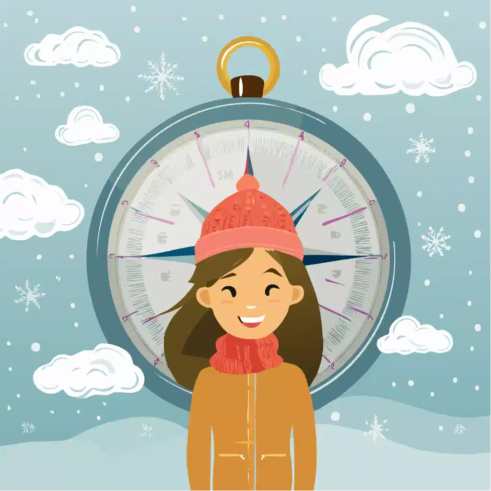

Vinterkrise: Eksperter Afslører Sandheden!
Er din vinterhumør på frysepunktet? Vores (selvudnævnte) kulde-eksperter har samlet tre geniale løsninger. Find ud af, hvad du virkelig skal gøre for at overleve den danske vinter. Læs med nu!
Se mere